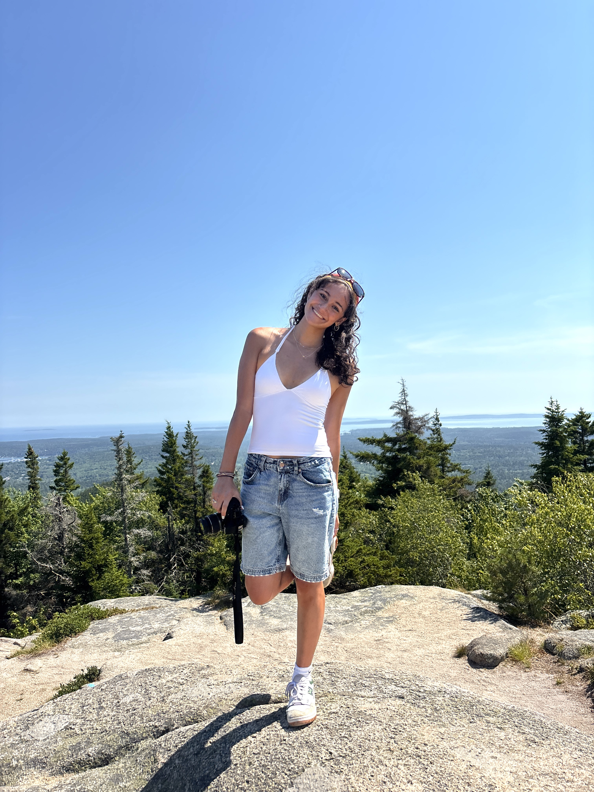

When I was younger, all I wanted to do was follow in the footsteps of my parents and brothers: successful, hard-working, and helping others as they did in the medical field. As I got older, I started indulging in shows and movies like Gilmore Girls and Little Women, all with a common theme: a young woman with aspirations of being a writer and making a difference in the world. They made their goals seem so obtainable. These inspiring characters, though different from the environment I had been surrounded by growing up, led me to understand that there are so many ways I could help people, that all my interests are important and deserve to be honored. Now, I am a journalism major at the University of Maryland, working hard to keep my opportunities open and remaining flexible so I’m not limiting my future to one singular path.
I am assigned stories to photograph weekly for this student-run publication. I also work to promote stories and the publication in general via social media. I am responsible for meeting my deadlines and attending staff meetings.
UNWIND is a student-published magazine run by UMD Media Scholars covering campus life. I was assigned different feature stories to photograph 3-5 photos for use during publishing. I was also responsible for attending weekly staff meetings in order to stay updated on the progress of the current issue our team was working on and to give any other relevant updates.
I am responsible for taking minutes of the Programming Council’s biweekly meetings for the VP Programming to look over and refer back to when helping council members plan chapterwide events. Attendance at these meetings is mandatory to hear the ideas, goals, and accomplishments of all council members as well as help hold them accountable.
I would produce a monthly newsletter to be sent out to the chapter's members, family, and friends. I was responsible for actively updating the mailing list and providing all necessary information involving Zeta Tau Alpha. I was also required to attend the Programming Council’s biweekly meetings to listen to other members’ ideas to meet the council’s semester goals and requirements.
I am expected to deliver exceptional customer service in a fast-paced food service environment, consistently meeting and exceeding customer and company expectations.